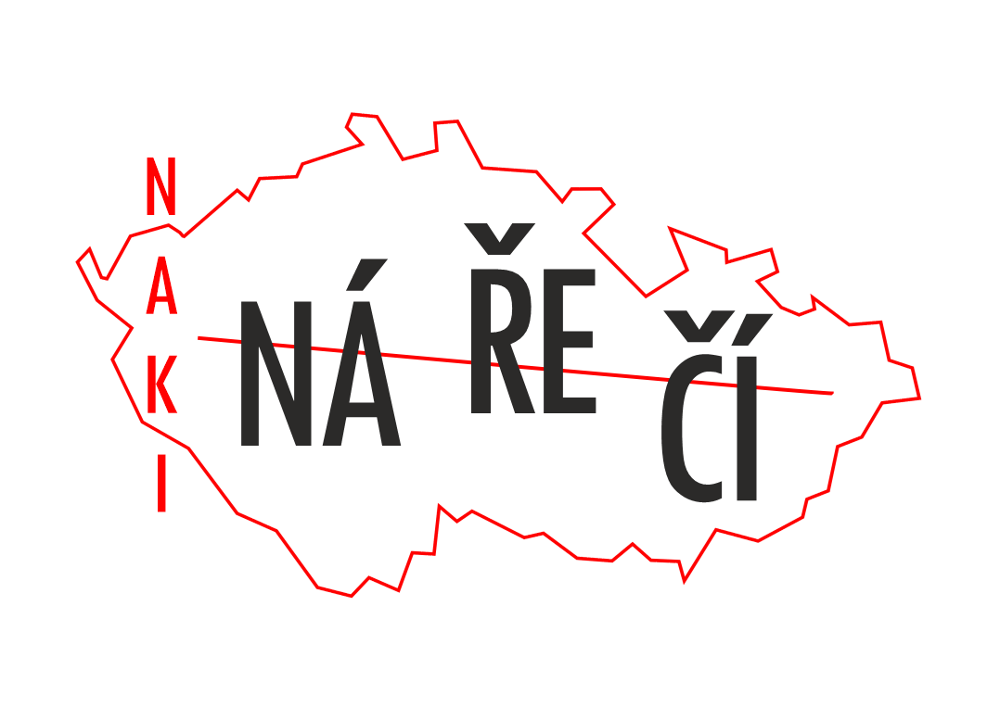

Systém ProPONAR slouží k uchování a správě textových příkladů, které je možno zastřešit jednotícím heslovým slovem a opatřit gramatickými údaji, informacemi o zdroji, lokalitě, významu nebo doplnit multimediálními soubory. Do systému lze nahrát vlastní seznam zdrojů, který umožňuje automatické provázání textových příkladů s jejich lokalitou. Veškerá data v systému je možné libovolně třídit a exportovat do strukturovaného souboru.
Pro bližší informace o práci se systémem využijte manuál.
Systém ProPONAR vznikl v rámci projektu Nářečí českého jazyka interaktivně. Dokumentace a zpřístupnění mizejícího jazykového dědictví jako nedílné součásti regionálních identit (Ministerstvo kultury (NAKI II), DG20P02OVV029).
